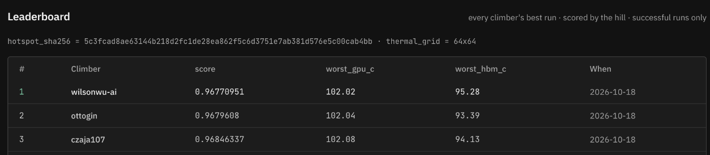

The simple version
ELI5
Think of a big baking tray. You must place eight hot pans on it. Four are fat pans (the GPUs). Four are small pans (the memory, called HBM).
Each fat pan is tied to two small pans with short strings. The strings cannot be too long, and you get a fixed pile of string. The strings also get warm.
Pans that sit too close warm each other, like burners under one pan. Pans that sit too far apart break the strings. Your job is to keep the hottest pan as cool as you can.
You ask two helpers. One is a fast guesser. She answers in under a second but is a little off. The other is a slow exact checker. He takes about 24 seconds but is right. The guesser tries thousands of spots. The checker looks at only the best few.
SSituation
The hack and the two tracks
Sundai Hack 145 ran at MIT. The opening talks set two tracks. Both are about the limits of AI compute: power, heat and memory.
The speakers said the AI data centers planned up to about 2030 are already signed. So new ideas matter after that, which is why the brief looks at 2035. A slide cites HPE and NVIDIA GTC 2025 for racks growing from 132 kW to 600 kW (deck slide 8).
Track 1 vs Track 2
- Track 1: build the AI data center of 2035. You may put it anywhere, even under the ocean or on Mars. The work is estimating cost, energy and tokens, then adding limits like memory and speed.
- Track 2: design the coolest chiplet layout. A chiplet package is a set of small chips on one silicon base, called an interposer. The talk used the AMD MI300A stack as the picture: base, interposer, GPU dies and HBM (stacked memory).
We took Track 2.
What the Track 2 speaker said
- He is finishing a PhD on simulation methods for the semiconductor stack.
- Pushing a GPU harder always costs temperature, so a cooler layout buys more performance (paraphrase). Memory can overheat too.
- How you solve it is up to the team. The organizers run an agent loop in the background: propose a layout, simulate, read the temperature, repeat.
- Teams can write their own simulator. He said building thermal simulators with Claude is easy (paraphrase, from a noisy transcript).
- Teams can also train a small neural network as a surrogate, a fast stand-in for the slow simulator, so the search runs faster.
Source: research/lecture.md. Speech-to-text was noisy, so the wording is a paraphrase, not a quote.
TTask
The official challenge, exactly
The challenge is the AutoLab hill beat-the-hotspot. You submit one file, submission.json, with the eight die positions and optional wire routes. The judge checks the geometry and runs its own pinned HotSpot simulator. It never runs your code.
What you place
- An interposer of 52 x 42 mm.
- 4 GPU dies, each 11.5 x 10.5 mm.
- 4 HBM stacks, each 10.5 x 10.2 mm.
- 8 links in total: each GPU is tied to two HBM stacks.
The rules
- Spacing: at least 1 mm between dies.
- Reach: the four primary links may span at most 5 mm (Manhattan distance, meaning left-right plus up-down). The four secondary links may span at most 6 mm.
- Port capacity: a link needs enough chip edge for its bandwidth. The slide example says a 600 Gb/s link needs at least 4 mm.
- Wire budget: total wire length times bandwidth must stay within 13,500 GB/s x mm.
- Wire heat: wires make heat. The spec prices it at 0.20 pJ per bit for the two endpoints plus 0.08 pJ per bit per mm.
- An invalid layout is rejected and does not rank.
How it is scored
- The judge runs 5 workloads, some memory-heavy and some compute-heavy.
- Score is the worse of two ratios: (hottest GPU minus ambient) over (reference GPU minus ambient), and the same for HBM. Ambient is 25 C.
- The reference is a seeded random layout. The baseline scores 1.0. Lower is better. Below 1 means both temperatures beat the reference.
- Routine runs use a 64 x 64 mesh. The final check uses 128 x 128.
- The stack is a 500 um interposer, a 150 um die plane and 20 um thermal paste under a fixed spreader and sink.
- Cooler window: a central 44 x 34 mm region touches the cooling better (0.25 m-K/W) than the edges (2.0 m-K/W). Where you put the hot dies matters.
Sources: the hill README and config in .official/sim, deck slides 28 to 34, research/tools.md. The README says the temperatures are relative benchmark values, not calibrated chip temperatures.
AAction
What we did
(a) The tools and why each one fits
AutoLab
A site (app.autolab.ai) where you log in with GitHub, pick a hill and get GPU and LLM credits for a coding agent. The Track 2 challenge is packaged as a hill, so this is where the official score lives.
Deck slides 38 to 41; hill config.
The beat-the-hotspot hill
Version 0.1.0. Three metrics, all to minimize: score, worst GPU C, worst HBM C. It fits because it gives one honest number and a fixed rulebook to climb against.
.official/sim/hill.yaml and README.
Organizer repos
chiplet-thermal-simulator holds the workload patterns and rules. chiplet-thermal-gui adds a viewer. Our judge and surrogate reuse the simulator's geometry and workload maps, so we play by the same rules. We did not use the GUI in code.
Slide 37; NOTICE.md.
HotSpot
An outside thermal simulator (uvahotspot/HotSpot). The judge runs a pinned build and takes the peak GPU and HBM temperatures from it. Only HotSpot output counts, so it is our ground truth. On a Mac we build it ourselves and check it against the reference file.
README; scripts/official/local_judge.py.
Models named in the slides
The deck names models only in the Track 1 slides: Kimi K3 (2.8T total, 104B active parameters), Qwen3.5-397B and Qwen3.5-122B, and gpt-oss-120b. None is used for Track 2 scoring. The README leaves the AI method open: agent, surrogate, Bayesian search or other.
Slide 10; README. Slides also mention a Gemma 4 hill; its link to Track 2 is unclear.
Claude Code
Slide 39 names Claude Code and Codex as agents that can optimize against a hill. The speaker also said Claude makes thermal simulators easy to build. That is why a fast home-made simulator was a fair plan.
Slide 39; research/lecture.md.
(b) The loop
A cheap surrogate searches many layouts. The slow judge checks only the best. Every checked layout is fed back to retrain the surrogate.
The same loop in words, for small screens:
- The hill gives the rules and 5 workloads.
- A generator makes only legal layouts.
- The surrogate scores each one in about 0.6 s.
- Simulated annealing (random search that sometimes accepts a worse move to avoid getting stuck) runs 6 chains of 200 steps on the surrogate.
- The best 6 distinct layouts go to the HotSpot judge, about 24 s each.
- The judge results retrain the surrogate. Repeat.
- The best verified layout becomes submission.json.
(c) Speed vs accuracy
HotSpot takes about 24 s per layout. Our surrogate takes about 0.6 s. That is roughly 40 times faster (24 divided by 0.6). Both times are our own measurements (video/data.json).
So we climb a ladder. Each rung is slower and more trustworthy than the one before.
- 1. Surrogate screens. Thousands of layouts, cheap.
- 2. HotSpot on the single binding workload. The one workload that sets the score. About 5 times cheaper than the full judge.
- 3. Full 5-workload HotSpot judge. Our local copy of the official pipeline.
- 4. AutoLab official score. The number that counts.
The rank correlation between surrogate and judge was 0.90 on 63 judged layouts. That is good enough to pick what deserves a check, but not good enough to trust alone.
(d) What failed and what we changed
- v1: annealing found the surrogate's blind spots. It chased layouts the surrogate loved and the judge did not. The surrogate predicted 0.952. HotSpot said 0.99 to 1.007, which is no better than baseline.
- v2: a trust region and a local residual correction. The trust region keeps the search close to layouts HotSpot has already checked. The residual correction fixes the surrogate's error near those layouts. Best score: 0.9740.
- Polish. The score is set by one die: G0 in the skewed_compute workload. We ran HotSpot on moves of that die directly. That took the score to 0.96771.
RResult
Scoreboard
Best score 0.96771. Hottest GPU 102.02 C. Hottest HBM 95.28 C.
| Run | Score | Hottest GPU C | Hottest HBM C |
|---|---|---|---|
| wilsonwu-ai (ours), AutoLab #1 | 0.96771 | 102.02 | 95.28 |
| ottogin, AutoLab #2 | 0.96796 | 102.04 | 93.39 |
| czaja107, AutoLab #3 | 0.96846 | 102.08 | 94.13 |
| Ours, surrogate loop v2 only | 0.97399 | 102.52 | 94.47 |
| Best of 66 random legal layouts | 0.97851 | 102.88 | 95.81 |
| Seeded random baseline | 1.0 | 104.59 | 97.68 |
Local HotSpot judge vs AutoLab official: identical. AutoLab scored our layout 0.96770951, the same value our local HotSpot twin computed, and the twin reproduces the baseline exactly (104.59 / 97.68 C, score 1.0).

The seeded baseline is 104.59 C (GPU) and 97.68 C (HBM), score 1.0. Lower is better.
What we built
- The app. Drag dies on the interposer. Legality updates live using the organizer's exact rules. A surrogate estimate and a heat map update as you move. Download a ready submission.json.
- A TypeScript port of the rules and the surrogate, verified on 43 fixtures (47 tests).
- The Python surrogate, the loop and the polish step.
- A local judge that reproduces the baseline exactly: 104.59 C and 97.68 C, score 1.0.
Honest limits
What to trust, and what not to
- The surrogate is a low-fidelity model on a 1 mm grid, with an affine correction (a straight-line fix per die class and workload). The estimates the app shows are estimates.
- Every ranking number comes from HotSpot, not from the surrogate.
- Final check on the 128 x 128 mesh: 0.9705 for the 0.96784 layout. The finer mesh takes back part of the margin, which is exactly what the final pass is for.
- Temperatures are relative benchmark values from the organizer's setup, not calibrated chip temperatures.
- Organizer code is not included in our MIT license. Files derived from it stay under the organizer's terms (see NOTICE).